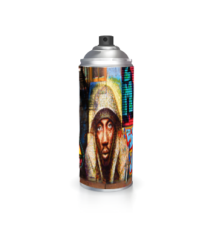

The founder of 5Pointz Aerosol Art Center, Inc. and curator of its outdoor gallery is graffiti veteran Jonathan Cohen, best known by his signature tag, “Meres One.” The Flushing native adopted his tag in his teenage years after determining that M, R, and E were his best calligraphic letters. Meres took an interest in graffiti at the young age of 13 after seeing an aerosol-based painted Smurf on a wall and flipping through a few graffiti books, and started the The Deadly4Mula (TD4) crew five years later. By the mid-’90s, Meres had studied art at the Fashion Institute of Technology, sold a few paintings, and was transitioning his craft from tagging and throw-ups to piecing. He produced hundreds of aerosol art murals throughout all five New York boroughs, along the East Coast, and even in Holland.
